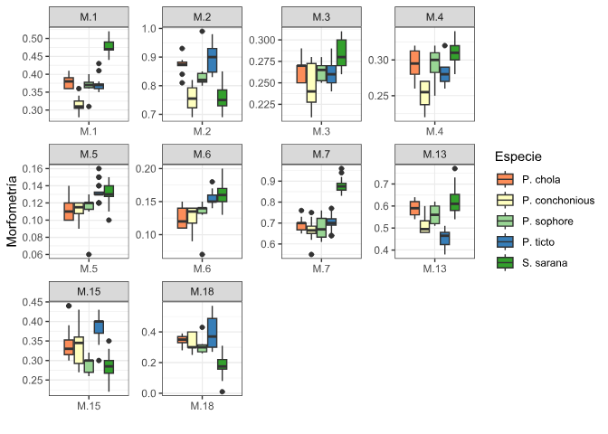

# Librerías requeridas
library(tidyverse)
library(ggplot2)
library(reshape2)
library(ggforce)
library(vegan) # Para el permutes en homogeneidad de covarianzas
library(mvnormtest) # Prueba de normalidad "mshapiro.test"
source("funciones.r") # Figuras de normalidad multivariada
library(ade4)
library(car) # Para ejecutar el diagnóstico de independencia
library(MASS)
Taller 10.1 Análisis de Varianza Multivariado - MANOVA
Objetivo de la actividad:
La base de datos que se utilizará es la de medidas morfométricas de peces de un estudio realizado con peces de la india por Gupta et al. (2018) Articulo fuente en los que se validó la taxonomía de peces de la subfamilia Barbinae, utilizando 19 variables morfométricas y 19 variables meristicas, correspondientes a 5 Especie de la familia en mención.

El objetivo de este ejercicio consiste en comparar los promedios multivariados de las variables morfométricas que caracterizan a los peces de cada especie (grupos en comparación), para conocer si los atributos morfométricos generan diferencias en cada grupo evaluado. La base de datos que se utilizará es peces.csv.
Referencias bibliográficas de apoyo.
Libro: Análisis de datos ecológicos y ambientales - Rodríguez-Barrios Javier 2023 Ver el capítulo de MANOVA, en donde se detallan los procedimientos descritos en el presente ejercicio.
MANOVA(Multivariate Analysis of Variance) Este documento presenta información relevante sobre la fundamentación de los MANOVAs y su análisis en R
How to perform the MANOVA test in R Este documento brinda información sobre los supuestos del MANOVA y la forma de realizar esta prueba multivariada en R.
Cargar las librerías requeridas
Cargar o importar la base de datos
La presente base de datos se encuentra en formato plano de csv, presenta una columna Especie que agrupa a las 5 Especie de peces, otra columna Grupo, que asigna un número a cada especie y posteriormente a las 19 variables morfométricas y 10 variables meristicas, de las cuales se selecionarán las 19 morfométricas para este ejercicio M.1 a M.19.
# Base de datos
peces<-read.csv2("peces.csv",row.names=1)
names(peces) [1] "Especie" "Grupo" "M.1" "M.2" "M.3" "M.4" "M.5"
[8] "M.6" "M.7" "M.8" "M.9" "M.10" "M.11" "M.12"
[15] "M.13" "M.14" "M.15" "M.16" "M.17" "M.18" "M.19"
[22] "M.20" "M.21" "M.22" "M.23" "M.24" "M.25" "M.26"
[29] "M.27" "M.28" "M.29"
Exploración de los datos
Para este ejemplo se urtilizarán figuras que relacionan parejas de variables y figuras de cajas que permitan visualizar diferencias entre las Especie de peces de acuerdo a su morfometría. *Para facilidad del ejercicio se seleccionarán algunas variables morfométricas - peces1, debido a que son las que presentan mejores patrones lineales.
# Elipses con colores con variables morfométricas
peces1 <- peces[,c(3:9,15,17,20)]
M <- cor(peces1) # Matriz de Correlación (M)La Figura 15.1 permite visualizar la resolución de cada variable para diferenciar o discriminar a las diferentes especies de peces. Esta figura sirve de insumo para descartar aquellas variables con poco potencial de discriminación de las especies.
# Figuras multivariadas de Cajas y bigotes
library(reshape)
x11()
ggplot(melt(peces[,c(1,3:9,15,17,20)]), aes(x=variable, y=value)) +
geom_boxplot(aes(fill=Especie)) +
scale_fill_manual(values = c('#fc8d59','#ffffbf','#99d594','#377eb8','#33a02c')) +
labs(x="",y="Morfometría") +
facet_wrap(~ variable,scales="free") +
theme_bw()
Cuatro pasos para la realización del MANOVA
Paso 1. Pruebas de supuestos
Para que el análisis de varianza multivariado - manova sea considerado como un modelo lineal, debe cumplir con los supuestos de normalidad multivariada, de homogeneidad de covarianzas y de independencia. Para el caso del presente ejercicio, los dos primeros supuestos no alcanzan a cumplirse con los diagnosticos utilizados (valor p < 0.05), motivo por el cual, el manova de este ejercicio será tomado como una técnica de exploración multivariada para evaluar las diferencias en las 5 especies, basado en las 10 variables morfomètricas seleccionadas.En el siguiente ejercicio se realizarán análisis de varianza no paramétricos pemanovas, que permiten probar hipótesis sin el cumplimiento de ls dos primeros supuestos, por lo cual serán los diseños multivariados más apropiados para esta base de datos.
1.1 Supuesto de normalidad
El supuesto de normalidad multivariada será evaluado con el paquete mvnormtest, el cual utiliza el estadìstico de Shapiro Wilks Multivariado. Para ello se realizarà esta prueba en cada uno de los grupos o especies en comparación. NOTA: Este supuesto también será evaluado con los residuales del manova, posterior a su ejecución.
# Diagnóstico de normalidad por cada tipo de Especie
library(mvnormtest)Los siguientes generan los dataframes de cada especie con las 10 variables seleccionadas, convirtiendola ademàs en formato matricial.
# Dataframe por cada especie
# datos de P. chola.
P.chola <- peces %>%
filter(Especie == "P. chola") %>%
subset(select = c("M.1","M.2","M.3","M.4","M.5","M.6","M.7","M.13","M.15","M.18")) %>% as.matrix()
# datos de P. conchonious.
P.concho <- peces %>%
filter(Especie == "P. conchonious") %>%
subset(select = c("M.1","M.2","M.3","M.4","M.5","M.6","M.7","M.13","M.15","M.18")) %>% as.matrix()
# datos de P. sophore.
P.sophore <- peces %>%
filter(Especie == "P. sophore") %>%
subset(select = c("M.1","M.2","M.3","M.4","M.5","M.6","M.7","M.13","M.15","M.18")) %>% as.matrix()
# datos de P. ticto.
P.ticto <- peces %>%
filter(Especie == "P. ticto") %>%
subset(select = c("M.1","M.2","M.3","M.4","M.5","M.6","M.7","M.13","M.15","M.18")) %>% as.matrix()
# datos de P. ticto.
S.sarana <- peces %>%
filter(Especie == "S. sarana") %>%
subset(select = c("M.1","M.2","M.3","M.4","M.5","M.6","M.7","M.13","M.15","M.18")) %>% as.matrix() Vale la pena resaltar que los datos de las especies P. chola y P. sophore, son singulares, por lo cual no puede calcularse su supuesto de normalidad multivariada. Con el objeto de continuar en el ejercicio, las matrices que representan a las especies en menciòn, seràn desactivadas con #.
# Prueba de normalidad para cada especie
library(mvnormtest)
# norm1 <- mshapiro.test(t(P.chola)) # Matriz singular
norm2 <- mshapiro.test(t(P.concho))
# norm3 <- mshapiro.test(t(P.sophore)) # Matriz singular
norm4 <- mshapiro.test(t(P.ticto))
norm5 <- mshapiro.test(t(S.sarana))A continuación se resume el resultado de los tres diagnósticos de normalidad multivariada realizados. Vale la pena mencionar que ninguna especie cumple con dicho supuesto estadóstico (valores p < 0.05), aunque existe la posibilidad de probar con alguna transformación.
# Resumen de el diagnóstico de normalidad
(normalidad = data.frame(Norm.P.concho = norm2$p.value,
Norm.ticto = norm4$p.value,
Norm.sarana = norm5$p.value)) Norm.P.concho Norm.ticto Norm.sarana
1 0.001050723 2.629679e-08 5.169222e-07
1.2 Supuesto de homogeneidad de covarianzas
La prueba de homogeneidad de covarianza o esfericidad, corresponde al segundo supuesto del análisis discriminante lineal, se utilizará la función betadisper, la cual es complementada por dos análisis de varianza, los cuales definirán si el supuesto logra ser cumplido.
# Pruebas de Homogeneidad de covarianzas paquete "vegan"
library(vegan)
peces.d <- dist(peces[,c(3:9,15,17,20)]) # Matriz de distancias
peces.homoge <- betadisper(peces.d, peces$Especie) # PermutestCon la siguiente anova se obtiene un valor p de 0.016*, lo cual indica que no se cumple el supuesto de homogeneidad de covarianzas (valor p < 0.05).
# 1) Prueba con anova permutacional
anova(peces.homoge) Analysis of Variance Table
Response: Distances
Df Sum Sq Mean Sq F value Pr(>F)
Groups 4 0.019804 0.0049509 3.281 0.01638 *
Residuals 65 0.098082 0.0015090
---
Signif. codes: 0 '***' 0.001 '**' 0.01 '*' 0.05 '.' 0.1 ' ' 1Con el permutest se obtiene un valor p de 0.015*, lo cual indica que tampoco se cumple el supuesto de homogeneidad de covarianzas (valor p < 0.05).
# 2) Prueba permutacional
permutest(peces.homoge) # Se cumple el supuesto de homogeneidad
Permutation test for homogeneity of multivariate dispersions
Permutation: free
Number of permutations: 999
Response: Distances
Df Sum Sq Mean Sq F N.Perm Pr(>F)
Groups 4 0.019804 0.0049509 3.281 999 0.018 *
Residuals 65 0.098082 0.0015090
---
Signif. codes: 0 '***' 0.001 '**' 0.01 '*' 0.05 '.' 0.1 ' ' 1
Paso 2. Análisis de Varinaza Multivariado - MANOVA
El manova, por ser un modelo lineal especial, requiere que se indiquen las variables continuas (variables Xi) y la variable cualitativa o categórica (variable Yi), que para este caso es la Especie.
# Manova (variables efecto: 10 morfológicas y la respuesta: Especie)
attach(peces)
peces.manova<-manova(cbind(M.1,M.2,M.3,M.4,M.5,M.6,M.7,M.13,M.15,M.18)~Especie)A continuación se presentará la tabla del manova para las tres primeras variables morfométricas. Para visualizar todos los resultados de este insumo, es necesario colocar solo: summary.aov(peces.manova). Para este caso se observa que todas las variables efecto o morfológicas, tienen un efecto muy significativo (valor p <<0.01) en la diferenciaciación de los 5 grupos o especies de peces.
# respuesta de la variable M.1
summary.aov(peces.manova)$" Response M.1" Df Sum Sq Mean Sq F value Pr(>F)
Especie 4 0.221052 0.055263 127.36 < 2.2e-16 ***
Residuals 65 0.028205 0.000434
---
Signif. codes: 0 '***' 0.001 '**' 0.01 '*' 0.05 '.' 0.1 ' ' 1# respuesta de la variable M.2
summary.aov(peces.manova)$" Response M.2" Df Sum Sq Mean Sq F value Pr(>F)
Especie 4 0.28343 0.070857 34.76 1.654e-15 ***
Residuals 65 0.13250 0.002038
---
Signif. codes: 0 '***' 0.001 '**' 0.01 '*' 0.05 '.' 0.1 ' ' 1# respuesta de la variable M.3
summary.aov(peces.manova)$" Response M.3" Df Sum Sq Mean Sq F value Pr(>F)
Especie 4 0.010738 0.00268443 10.486 1.29e-06 ***
Residuals 65 0.016641 0.00025601
---
Signif. codes: 0 '***' 0.001 '**' 0.01 '*' 0.05 '.' 0.1 ' ' 1A continuación se presentan los cuatro tipos de MANOVAS, con la diferencia de que Hotelling puede utilizarse sin el cumplimiento del supuesto de normalidad multivariada (pero deben cumplirse los otros supuestos como el de la homogeneidad y el de la independencia). Para este caso los 4 estadísticos muestran altas diferencias entre algunos de los grupos representados por las cinco especies, posiblemente por el efecto de P. sarana, que al ser de un género diferente, presenta marcadas diferencias morfológicas (ver ?fig-figura3).
# Tipos de MANOVA para evaluar si hay diferencias en los promedios de cada Especie
summary(peces.manova,test="Pillai") Df Pillai approx F num Df den Df Pr(>F)
Especie 4 2.513 9.9711 40 236 < 2.2e-16 ***
Residuals 65
---
Signif. codes: 0 '***' 0.001 '**' 0.01 '*' 0.05 '.' 0.1 ' ' 1summary(peces.manova,test="Wilks") Df Wilks approx F num Df den Df Pr(>F)
Especie 4 0.0028912 19.667 40 214.2 < 2.2e-16 ***
Residuals 65
---
Signif. codes: 0 '***' 0.001 '**' 0.01 '*' 0.05 '.' 0.1 ' ' 1summary(peces.manova,test="Hotelling") Df Hotelling-Lawley approx F num Df den Df Pr(>F)
Especie 4 29.052 39.584 40 218 < 2.2e-16 ***
Residuals 65
---
Signif. codes: 0 '***' 0.001 '**' 0.01 '*' 0.05 '.' 0.1 ' ' 1summary(peces.manova,test="Roy") Df Roy approx F num Df den Df Pr(>F)
Especie 4 23.757 140.17 10 59 < 2.2e-16 ***
Residuals 65
---
Signif. codes: 0 '***' 0.001 '**' 0.01 '*' 0.05 '.' 0.1 ' ' 1
Paso 3. Supuestos del MANOVA
SOn tres los supuestos que a continuación se probarán: (1) Normalidad en los residuales, (2) homogeneidad de las covarianzas y (3) Independiencia en los datos. Vale la pena resaltar la importancia del cumplimiento de la independiencia, debido a que presenta un efecto sobre diseños que requieran ser aleatorios. La homogeneidad fue diagnosticada al inicio de este ejercicio no se cumple.
3.1. Supuesto de normalidad de los residuales del MANOVA
A continuación se probará el supuesto de (1) normalidad en los residuales del manova, de forma numérica y gráfica. El estadístico de Shapiro Wilks Multivariado es el que se utiliza, demostrando que los residuales están muy alejados del patrón normal (valor p << 0.01 o p = 3.043e-07).
# 1) Prueba de multinormalidad de los residuales del manova (mshapiro.test)
library(mvnormtest)
x <- as.matrix(t(residuals(peces.manova)))
mshapiro.test(x)
Shapiro-Wilk normality test
data: Z
W = 0.83893, p-value = 3.043e-07# No se cumple este supuestoA continuación se hará uso del código fuente “funciones.r” el cual presenta los comandos requeridos para la figura que diagnostica la normalidad multivariada (Figura 15.2 qqplot).
# Figura de multinormalidad
# Funciones para la figura
source("funciones.r")En la Figura 15.2 se observa que algunos residuales (puntos circulares) se alejan considerablemente del patrón de normalidad, definido por la recta roja.
# Grafica QQ-PLot para visualizar la normalidad
x <- as.matrix(residuals(peces.manova))
# centroide
center <- colMeans(x)
n <- nrow(x); p <- ncol(x); cov <- cov(x);
d <- mahalanobis(x,center,cov)
x11()
qqplot(qchisq(ppoints(n),df=p),d,
main="Normalidad multivariada",
ylab="Cuantil Chi-Cuadrado", xlab= "Distancia Mahalanobish")
abline(a=0,b=1,col=2)
3.2. Supuesto de independencia
Se utilizará el estadístico Durbin Watson (DW) el cual demuestra que se cumple la independencia (valor p > 0.05).
# Prueba de Independencia - Estadistico Durbin Watson
attach(peces)
modelo<-lm(M.1+M.2+M.3+M.4+M.5+M.6+M.7+M.13+M.15+M.18~Especie)
durbinWatsonTest(modelo) lag Autocorrelation D-W Statistic p-value
1 0.08444408 1.80425 0.202
Alternative hypothesis: rho != 0
Paso 4. Prueba a postriori del MANOVA
A continuación, se realizará una figura del análisis discriminante - lda, que permitirá generar definir al nivel de discriminación de cada grupo o especie de pez. Se presentan algunas opciones gráficas con el procedimiento general y con el análisis discriminate canónico (dca)
# Cálculo del LDA
names(peces) [1] "Especie" "Grupo" "M.1" "M.2" "M.3" "M.4" "M.5"
[8] "M.6" "M.7" "M.8" "M.9" "M.10" "M.11" "M.12"
[15] "M.13" "M.14" "M.15" "M.16" "M.17" "M.18" "M.19"
[22] "M.20" "M.21" "M.22" "M.23" "M.24" "M.25" "M.26"
[29] "M.27" "M.28" "M.29" dis<-lda (Especie ~ M.1+M.2+M.3+M.4+M.5+M.6+M.7+M.13+M.15+M.18,
data = peces)A continuación se realizará el componente grafico del lda, el cual inicia con una figura que definirá unas elipses, las cuales relacionan a los individuos de cada especie y cuyo solapamiento definirá el nivel de relación entre estas.
# Escores o coordenadas de las observaciones en cada eje can?nico
Fp <- predict(dis)$x# Grupos asignados por el AD
group<-predict(dis,method="plug-in")$class# Coordenadas y grupos asignados
peces.coord=data.frame(Especie=group,Fp)La ?fig-figura3 demuestra que si bien de presenta una buena discriminación de las especies de peces, 4 de las 5 evaluadas presentan cierta relación, definida por el solapamiento de sus elipses.
# Figura del LDA
attach(peces)
x11()
scatterplot(LD2~LD1 | Especie, data=peces.coord,reg.line=FALSE,
smooth=F, spread=F,span= 1,grid=F,
legend=list(coords="bottom"),
ellipse=T,font.lab=2, pch=c(15,16,17,18,19),
col=c('#fc8d59','#e41a1c','#984ea3','#377eb8','#33a02c'),
main="Análisis discriminante",
font.main=2,cex.main=2,cex.lab=1.5,
xlab="Eje1", ylab="Eje2")